KostLabs is an R&D organization dedicated to advancing DevOps and software engineering — delivering open-source boilerplate and agents that follow best practices and CISO security standards.
What we do
KostLabs is an R&D organization dedicated to advancing the state of the art in DevOps and software engineering. We produce open-source boilerplate code and intelligent agents that empower teams to deliver high-quality, secured software at enterprise scale.
Every library and tool we ship is grounded in established engineering principles, CISO standards, and the hard-won lessons of operating software in production environments.
Every component is built to meet CISO standards out of the box.
All libraries are freely available and community-driven.
Designed for teams that ship software in demanding environments.
Drop-in foundations so teams stop reinventing the wheel.
Why KostLabs
Our founders bring deep experience in development operations and cybersecurity. Across many organizations, the same pattern emerges: boilerplate code repeating across projects, drifting out of sync with security standards, impossible to maintain at scale.
The problems
The same scaffolding is written from scratch in project after project — dev time wasted, inconsistency introduced, vulnerabilities carried forward.
Security and compliance requirements evolve. Custom-rolled infrastructure rarely keeps pace, leaving organizations exposed without knowing it.
Every team reinvents logging, secret management, and HTTP wiring. The result is a patchwork that's hard to audit, upgrade, or hand off.
How we solve it
Drop-in open-source boilerplate that covers the common ground — so teams start from a solid, reviewed base instead of a blank slate.
Every component is built to CISO standards and kept up to date — compliance doesn't drift because it's baked in from the start.
One shared toolkit means logging, secret management, and HTTP patterns look and behave the same — easy to audit, upgrade, and hand off.
Open-source projects
A simple JSON-based structured logger for Go. Consistent, observable log output without ceremony.
View projectAWS SSM Parameter Store integration for Go applications. Secure secret management with minimal configuration overhead.
View projectA holidays utility library for operational tooling and scheduling systems that need to be calendar-aware.
View projectAnd more
KostLabs is continuously growing. Explore the full organization on GitHub to see everything we're working on — and consider contributing.
How we work
Everything we build is grounded in a consistent set of principles — the same ones documented in our Idiomatic Go Guidelines.
Single responsibility, open/closed, dependency inversion — every module has one reason to change.
Structured logging with request IDs, latency, RTT, and typed error categories — from day one.
Consistent naming, clear package boundaries, and conventions aligned with the broader Go ecosystem.
No panic, no silent failures. Errors are categorized, surfaced, and carry contextual messages.
Structured commit history, semantic versioning, and automated changelogs through consistent message conventions.

Browse our open-source libraries, read the guidelines, and join a community building secure, maintainable DevOps infrastructure.